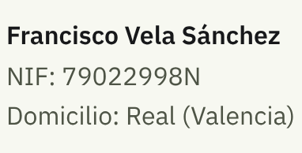

Aviso legal y privacidad
Titular

Contacto: equiposoporte.teo@gmail.com · Instagram: @teo.teloexplica
Qué es esta web
Una guía informativa e independiente sobre cómo prepararse para un apagón o una emergencia de 72 horas, elaborada a partir de recomendaciones públicas. No es una publicación oficial ni sustituye las indicaciones de las autoridades. Ante una emergencia, llama al 112.
Enlaces de afiliado
En calidad de Afiliado de Amazon, obtengo ingresos por las compras adscritas que cumplen los requisitos aplicables. Los productos de la guía enlazan a Amazon; comprar desde esos enlaces no te cuesta más.
Privacidad y cookies
- Esta web no usa cookies, ni analítica, ni formularios, ni publicidad de terceros. Las fuentes tipográficas se sirven desde la propia web.
- Lo que marcas en la lista de comprobación, la provincia de la radio y los teléfonos que apuntas se guardan solo en tu navegador (almacenamiento local) para que no los pierdas; no se envían a ningún sitio y puedes borrarlos limpiando los datos del navegador.
- La web se aloja en GitHub Pages (GitHub, Inc.), que puede registrar datos técnicos de acceso, como la dirección IP, por seguridad y funcionamiento del servicio.
- Si decides hacer una aportación voluntaria, el pago se gestiona en Stripe (Stripe Payments Europe, Ltd.); esta web no recibe ni guarda los datos de tu tarjeta. \n
- Al pulsar un enlace a Amazon, Instagram o Google Drive sales de esta web y se aplican sus propias políticas de privacidad y cookies.
Propiedad intelectual
Textos, ilustraciones y diseño: @teo.teloexplica. Las marcas citadas pertenecen a sus titulares. Tipografía IBM Plex, con licencia SIL Open Font License 1.1.